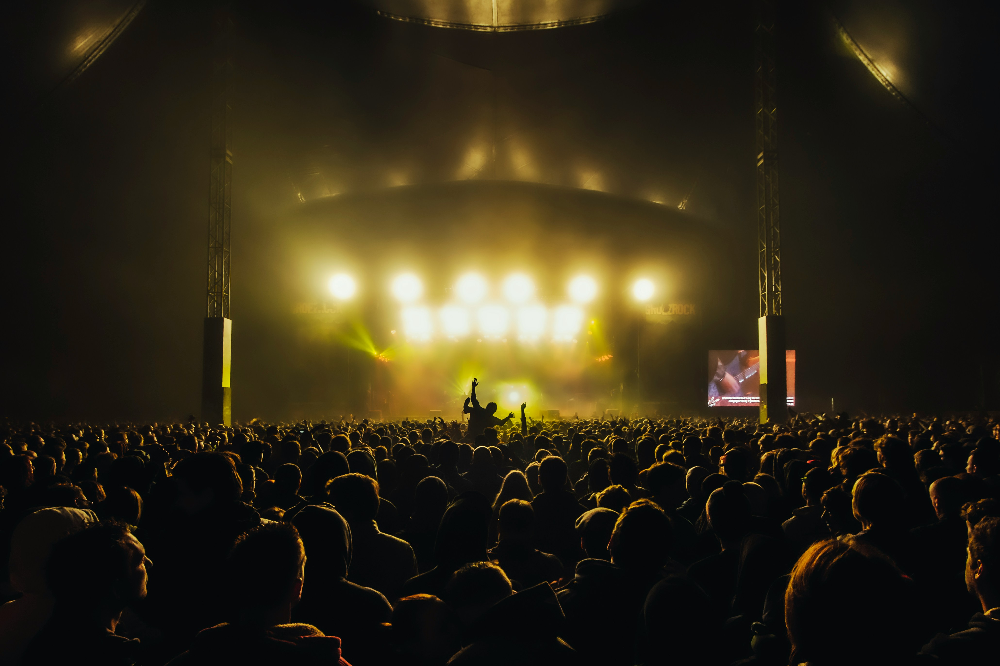

Artist Lineup & Timetable
Explore the official performance schedule across all three festival arenas.

Official Concert Schedule
| Set Time | Artist / Band | Stage Location | Subgenre |
|---|---|---|---|
| 17:00 – 18:00 | Static Siren | Distortion Tent | Grunge / Garage Punk |
| 18:15 – 19:30 | Rust & Bone | The Pit Stage | Hard Rock / Stoner |
| 19:45 – 21:00 | Thunderforge | Crunch Main Stage | Heavy Metal / Power |
| 21:15 – 22:30 | Blackout Riff | Distortion Tent | Post-Hardcore / Alt-Rock |
| 22:45 – 00:30 | Iron Echo (Headliner) | Crunch Main Stage | Classic Hard Rock & Pyro |
Stage Notes
- The front-of-stage golden circle closes 15 minutes before Iron Echo takes the stage.
- Earplugs are available for free at all sound engineer booths.
- Crowd surfing is strictly permitted at your own risk—always catch your fellow headbangers.